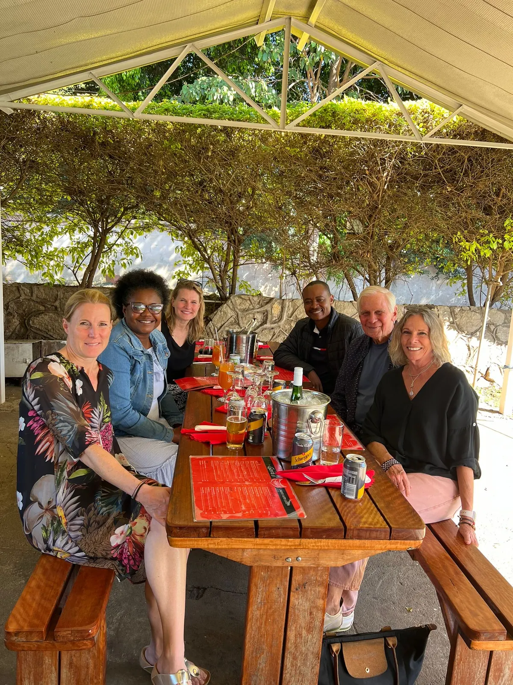
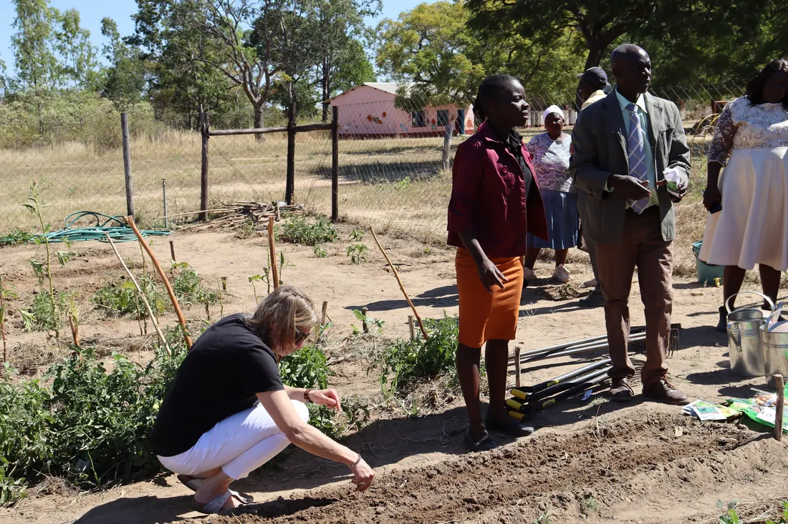
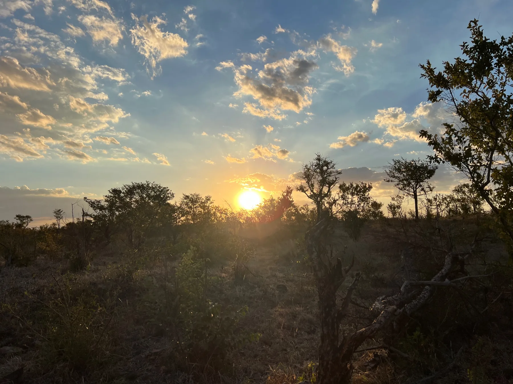

Why Zimbabwe?
Doris and Hans Herz laid the foundation.
The connection began with personal experience in Zimbabwe. It inspired a desire to help where trust and local partners could make a real difference.

The foundation
Doris and Hans Herz founded the organisation out of a sense of personal responsibility. Today, the next generation carries on their work with continuity, a close connection to Zimbabwe and the aim of making outside support unnecessary in the long term.
The connection began with personal experience in Zimbabwe. It inspired a desire to help where trust and local partners could make a real difference.

The foundation works with trusted partners such as the Kapnek Trust and listens to the communities who know their own circumstances best.

Nutrition remains important. Water, gardens and local responsibility make the next step possible.
How we work
This is more than a well-worded principle. It shapes how projects are chosen, supported and described.
We see projects for ourselves and stay in direct contact with schools and partners.
Communities take responsibility, because that is what makes support sustainable in the long term.
A meal, a borehole, a therapy session or a garden brings tangible change.

Dr Arnd Herz
Arnd Herz brings together a long-standing connection with Zimbabwe, a medical perspective and a focus on water, health and self-reliance.

Dr Christina Herz
The 2024 visit highlighted nutrition, health checks, therapy services and the circumstances of families.

Brigitte Herz
As the foundation develops, Brigitte emphasises that development work must be described honestly, acknowledging opportunities, risks, trust and the time it takes.
What stays the same
The foundation is run by volunteers, with no staffing or advertising costs. Travel, office and administration expenses are covered privately. Every donation is therefore available in full for our projects.
Many donors have supported us since Doris and Hans Herz established the foundation. Their trust continues to sustain our work. Together with new supporters, we are carrying it forward into the next generation.

Our story
The connection to Zimbabwe is part of Doris and Hans Herz's story. Their encounters grew into friendships and long-standing partnerships that continue to shape our work today.
Doris and Hans Herz laid the foundation through their personal commitment.
Visits and regular contact with partners make the impact personal and allow us to see it for ourselves.
The next generation continues the work with schools and communities.